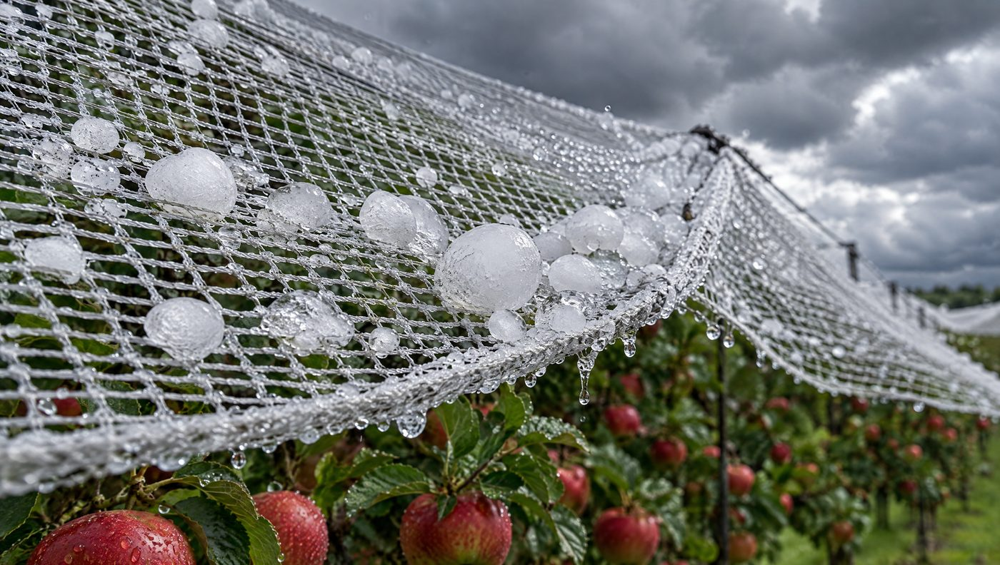
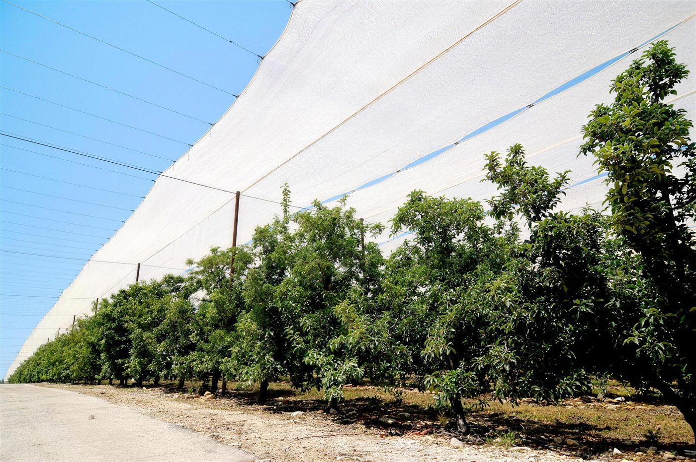
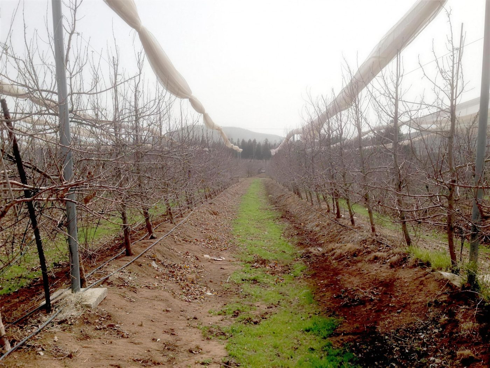
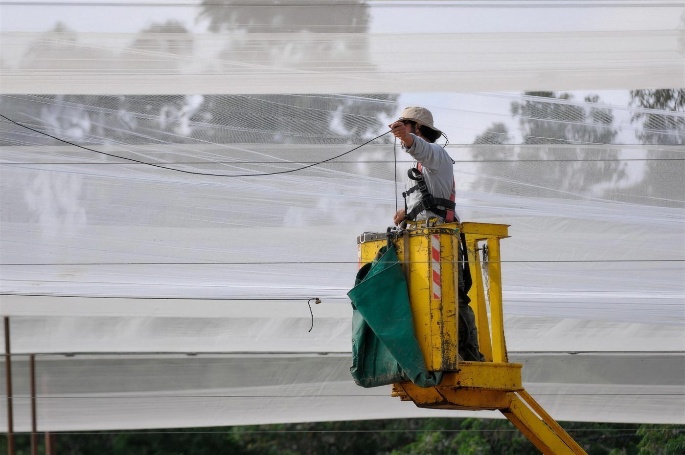

- רשת נגד ברד מונעת את הנזק עצמו. בניסויים שפורסמו היא גם הורידה כוויות שמש והחלישה רוח. היא לא מגינה מקרה, ובצבע או באחוז הצללה לא נכונים היא עלולה לפגוע ביבול ובצבע הפרי.
- שלוש משפחות של מערכות: רשת תשליך, בית רשת שטוח או דו-שיפועי ובית רשת עם הדליה. העלויות המוכרות לחישוב מענק לפי משרד החקלאות: 1,300, 8,000 ו-14,000 ₪ לדונם. אלה לא הצעות מחיר.
- באזורים מושלגים מתכננים רשת מתקפלת. בחורף הרשת מאוגדת לאורך הכבלים, והשלג לא נערם על המבנה.
- רשת או ביטוח? לפי מחקר מהאוניברסיטה הטכנית של מינכן, באתר עם סיכון ברד גבוה הרשת עדיפה. ביטוח מתאים בעיקר למשק ממונף ושונא סיכון באתר עם סיכון בינוני.
- בצפון, ההנדסה היא שקובעת: עומסי רוח, שלג, שיפועים וקרקע בזלתית. היא מתחילה בביקור בשטח.
ברד מגיע בלי התראה. סופה אחת באביב או בתחילת הקיץ יכולה למחוק עונה שלמה של עבודה במטע שאין מעליו רשת נגד ברד. ב-2024 פיצתה קנט את מגדלי הפירות בכ-77 מיליון ₪. לפי הדיווח, הסיבות העיקריות היו נזקי חום במנגו וברד שפגע בגידולי קיץ כמו דובדבן, אפרסק ונקטרינה14. ב-2025 הגיעו פיצויי מזג האוויר לחקלאות לכ-450 מיליון ₪, השיא של יותר מעשור15.
המדריך הזה נכתב למגדלי תפוחים, דובדבן, קיווי ונשירים אחרים בגולן ובגליל, ולמשקיעים שבוחנים מטע בחו״ל. ההחלטה איזו רשת נגד ברד לבחור נוגעת בהרבה יותר מהרשת עצמה. היא קובעת איך ייראו העמודים, הכבלים והעיגון, ומה יקרה למבנה בחורף. את התמונה הרחבה של סוגי בתי רשת, החומרים ותהליך ההקמה פירטנו במדריך היסוד. כאן נתמקד בברד, בשלג ובמטע.
מתאים לכם אם
- אתם מתכננים מטע או בית רשת של 50 דונם ומעלה בישראל, או 30 הקטר ומעלה בחו״ל
- המטע באזור חשוף לברד, לרוח או לשלג
- אתם מחפשים מבנה שיחזיק שנים, ושותף שילווה אותו גם אחרי ההקמה
פחות מתאים אם
- מדובר בחלקה קטנה או בגינה פרטית
- אתם מחפשים רק את המחיר הזול ביותר לרשת
- אתם צריכים קבלן שיטפל גם ברישוי ובהיתרים
מה רשת נגד ברד עושה, ומה היא לא עושה
ברד: ההגנה הישירה
ההבדל העקרוני בין רשת לבין ביטוח פשוט: ביטוח מפצה אחרי הנזק, והרשת מונעת אותו. הנתונים הבאים מראים מה זה אומר במטע אמיתי. בניסוי שנמשך שלוש עונות במטע תפוחים בדרום ברזיל, סופת ברד אחת ב-2010/11 גרמה לאובדן מלא בחלקה הפתוחה. מתחת לרשת נקטפו באותה עונה 95.2 טון להקטר7. החוקרים מציינים שגם מתחת לרשת נרשם נזק לפרי, רובו קל, והפרי עדיין שווק כפרי טרי. הגנה מלאה לא קיימת, אבל ההבדל הוא בין עונה שאבדה לבין עונה שנמכרה.
שנה אחת של ברד: יבול תפוחים תחת רשת נגד ברד מול שטח פתוח
טון להקטר, זן רויאל גאלה, שלוש עונות באותו מטע
הנתונים בטבלה
| שטח פתוח | תחת רשת | |
|---|---|---|
| 2008/09 | 59.3 | 90 |
| 2009/10 | 30.9 | 36.2 |
| 2010/11 | 0 | 95.2 |
תמונה דומה עלתה בניסוי בודד במטע אגסים בצפון מקדוניה. אחרי סופת ברד נשרו 40% עד 48% מהפירות על העצים הלא מכוסים, ורק 5% עד 8% מהפירות נותרו ללא נזק. על העצים המכוסים, כך כתבו החוקרים, התקבלה הגנה מרבית8.

שמש וחום
הרשת מסננת חלק מהקרינה, ולכן היא עוזרת גם בגלי חום. בניסוי של מנהל המחקר החקלאי ומו״פ צפון בתפוח זהוב ירד שיעור כוויות השמש מ-10.1% בביקורת ל-2.5% עד 0.7% מתחת לרשתות. באותו ניסוי הרשת העלתה מעט את טמפרטורת הנוף בלילה, עד כמעלה אחת, והורידה אותה ביום, עד כ-1.7 מעלות4. בניסוי צבעי הרשתות בברעם כל רשתות ה-30% הגנו היטב מפני כוויות שמש, בשני הזנים. רשת של 15% הגנה רק חלקית3. גם בניסויים באוסטרליה ירד שיעור הפירות שנפגעו מכוויות שמש. בגרני סמית׳ הוא ירד מ-21% ל-6%, ובפוג׳י מ-36% ל-8%9.
כוויות שמש בתפוחים: בלי רשת מול רשתות באחוזי הצללה שונים
אחוז הפירות עם כוויות שמש, תפוח זהוב (גולדן דלישס) בוגר, ניסוי מו״פ צפון
הנתונים בטבלה
| ערך | |
|---|---|
| ללא רשת (ביקורת) | 10.1% |
| רשת 16% צל | 2.5% |
| רשת 30% צל | 2.1% |
| רשת 60% צל | 0.7% |
רוח
במטע בברזיל מדדו מהירות רוח נמוכה ב-30% מתחת לרשת7. בניסויים באוסטרליה המהירות הייתה נמוכה עד 50%9. בישראל נמדדה רוח מעל מטע משמש ורימון בכפר הרי״ף, שכוסה ברשת דו-שיפועית להגנה מברד ולהצללה. נמצא שהרשת החלישה את רמת הטורבולנציה4. פחות רוח פירושה פחות שפשוף של פירות בענפים ופחות שבירת ענפים צעירים. המחיר הוא שהרוח נלחצת על המבנה עצמו, ועל כך נרחיב בפרק ההנדסה.
ציפורים וחרקים
רשת שסוגרת את המטע מכל הצדדים מונעת גם ציפורים. במטע תפוחים מסחרי במינסוטה נבדקה רשת נגד ברד בפריסה עוטפת. אוכלוסיית עש התפוח הייתה נמוכה בה ב-94% מבחלקה פתוחה, ואוכלוסיית זבוב התפוח נמוכה ב-96%10. זה ניסוי בודד באקלים אחר. הוא מראה כיוון, לא תוצאה מובטחת.
הגבולות: מה חשוב לדעת לפני שמכסים
- אין הגנה מקרה. הדוח האוסטרלי קובע במפורש שרשת נגד ברד לא מגינה מקרה9.
- פחות אור. רשת שחורה מפחיתה את הקרינה הפוטוסינתטית בכ-63%. לפי סקירה מ-2025, בהשוואה לרשת לבנה היא עלולה לעכב את הבשלת התפוחים בעד שבוע12. ברשת של 60% צל היו הפירות קטנים יותר4.
- צימוח חזק יותר. בניסוי בברעם נמצא צימוח חזק יותר מתחת לרשת בחלק מהזנים3. זה משפיע על הגיזום ועל ניהול המטע.
- צבע הפרי. לפי סקירה מקיפה, התוצאות על השפעת הרשת על איכות הפרי אינן חד-משמעיות11. התשובה תלויה בזן, בצבע הרשת ובאחוז ההצללה.
- הרשת מתיישנת. לפי אותה סקירה, העברת האור דרך הרשת יורדת בכ-2% בשנה11. לכן תחזוקה וניקוי הם חלק מהתכנון, לא תוספת.
בית רשת לתפוחים ברמת הגולן, שהרשת שלו מתקפלת בחורף. בית רשת לקיווי בברעם עם הדליה בצורת סוכה. בית רשת לדובדבן. בכל אחד מהם הרשת, המבנה והעיגון נבחרו לפי הגידול, השטח והחורף המקומי, וכל הרכיבים נבדקו במפעל לפני שיצאו לשטח.
שלוש מערכות: רשת תשליך, בית רשת ובית רשת עם הדליה
משרד החקלאות מפרסם טבלת עלויות מאושרות למבני רשת במטעים. הטבלה משמשת לחישוב המענק בלבד ואינה מחיר שוק1. היא נותנת שפה משותפת להשוואה, ולכן נשתמש בה כאן.
| מערכת | איך היא בנויה | עלות מוכרת למענק (לדונם) | גידולים לדוגמה בטבלת המשרד | הערות בטבלה |
|---|---|---|---|---|
| רשת תשליך | רשת שנפרשת ישירות על העצים, בלי מבנה קבוע גבוה | ₪1,300 | הדרים (אור), תפוח (אנה), אפרסק, נקטרינה, שזיף, משמש ודובדבן | ״רק באזורים מרכז ודרום״, ״לזנים מוקדמים ובכפוף להמלצת מדריך״ |
| בית רשת נמוך (שטוח או דו-שיפועי) | עמודים, כבלים ועיגון קבועים, רשת שנמתחת מעל הנוף | ₪8,000 | דובדבן, ענבים, פירות קיץ נשירים, תאנים, כרם מאכל וליצ׳י | עד 4 מטר לא נדרש היתר בנייה; מעל 4 מטר נדרש |
| בית רשת עם הדליה (כולל הדליה בצורת סוכה) | מבנה רשת ומערכת הדליה שמתוכננים יחד | ₪14,000 | קיווי ונשירים אפילים: תפוח, אגס, אפרסק ונקטרינה | עד 4.5 מטר לא נדרש היתר בנייה; מעל נדרש. העלות כוללת את ההדליה |
| רשת מתקפלת | בית רשת שהרשת שלו מאוגדת לאורך הכבלים בחורף | אין סעיף נפרד בטבלה | לפי סוג המבנה והגידול | כדאי לברר מראש עם המנהלה לאיזה סעיף המבנה משויך |
לפי הערות הטבלה, העלות המוכרת כוללת תשתית, ברזל, רשת אחת ועבודה. מבנים עם רשת כפולה אינם כלולים בה1. ההיתר באחריות היזם, ולכן כדאי להתחיל בו מוקדם.
רשת תשליך
זו ההשקעה הנמוכה ביותר. הרשת נפרשת על העצים לעונה ומורדת בסופה. יש לה מחיר משלה: עבודה בכל עונה, מגע של הרשת בנוף ופחות שליטה במיקרו-אקלים. שימו לב גם להערה בטבלת המשרד. ההכרה ברשת תשליך מופיעה שם לאזורי מרכז ודרום ולזנים מוקדמים1. לכן מגדל בגולן ובגליל העליון צריך לבדוק מראש אם היא בכלל מוכרת אצלו.
בית רשת שטוח או דו-שיפועי
זה מבנה קבוע: עמודים, כבלי גג, כבלי היקף ועוגנים, ומעליהם רשת מתוחה. בגג שטוח הרשת אחידה ופשוטה לפריסה. בגג דו-שיפועי השיפוע מוביל את הברד למרווח שבין היריעות, כך שהוא לא נערם על הרשת. הבחירה בין השניים תלויה בעוצמת הברד הצפויה, ברוח, ברוחב השורות ובגובה הכלים שעוברים במטע.
בית רשת עם הדליה, והדליה בצורת סוכה לקיווי
בקיווי ובנשירים אפילים, המבנה שמחזיק את הרשת ומערכת ההדליה מתוכננים יחד. בהדליה בצורת סוכה הצמחים נפרסים על משטח אופקי מעל השורה, והרשת נמתחת מעליו. הכבלים, העמודים והעיגון צריכים לשאת את משקל הצמח, את משקל היבול ואת לחץ הרוח על הרשת, והכול באותו מבנה. זו הסיבה שהעלות המוכרת כאן גבוהה יותר. תכנון משותף גם חוסך עמודים כפולים.

רשת מתקפלת לחורף: למה מקפלים ואיך זה עובד
ברמת הגולן ובגליל העליון שלג הוא אירוע שחוזר. רשת פרושה עוצרת את השלג, כמו שהיא עוצרת ברד. גשם עובר דרך הרשת, אבל שלג נערם עליה, ושלג רטוב כבד במיוחד. כל המשקל הזה עובר אל הכבלים, משם אל העמודים ואל העוגנים. מבנה שתוכנן לשאת גם שלג על רשת פרושה יהיה כבד ויקר בהרבה. הפתרון ההנדסי הוא לא לתת לשלג משטח לשכב עליו.
ברשת מתקפלת, הרשת נאספת ומאוגדת לאורך הכבלים בסוף העונה. השלג נופל בין השורות אל הקרקע, והמבנה נושא בחורף בעיקר את משקלו העצמי. בתקופת התרדמה העצים לא צריכים את ההגנה, ולכן הקיפול לא פוגע במטע. זה העיקרון של בית הרשת לתפוחים שהקמנו ברמת הגולן, שהרשת שלו מתקפלת בחורף.
- אחרי הקטיף ונשירת העליםמקפלים את הרשת ומאגדים אותה לאורך כבל הרכס או כבל השורה. מועד הקיפול נקבע לפי אזור וזן.
- קיבוע לחורףמהדקים את הרשת המאוגדת כך שהרוח לא תפתח אותה ולא תשפשף אותה בכבלים.
- בדיקת חורףזה הזמן לבדוק כבלים, מתחים, עוגנים ותפסנים, כשהמטע חשוף והגישה נוחה.
- פריסה לקראת העונהפורסים לפני תחילת עונת הסיכון לברד. את המועד קובעים לפי אזור וזן, יחד עם המדריך או האגרונום.
- במהלך העונהבודקים את המבנה אחרי כל סערה, ומטפלים מיד בקרע או בכבל שהשתחרר.

עבודות הקמה בצפון נעשות פעמים רבות בחורף, בגשם ובקור. שם נבחנים לוחות הזמנים.
„הפגינו מקצועיות, יצירתיות וגמישות, ועמידה בלוחות זמנים גם כאשר החורפים היו גשומים במיוחד.”
יש גם מגמה הפוכה. ניסוי של שה״מ ומיגל, כפי שדווח ב-Ynetnews, בדק רשתות הצללה שחורות של 90% בסתיו ובחורף כדי להגדיל את מנות הקור בנשירים. לפי הדיווח עלו מנות הקור בכ-24%17. זו לא רשת נגד ברד ולא מחקר שעבר שיפוט, אבל זו תזכורת: מה פרוש בחורף נקבע לפי אזור, זן ויעד.
צבע הרשת ואחוז ההצללה
הניסוי המוכר בישראל בנושא נערך במטעי התפוחים של קיבוץ ברעם, במשך חמש עונות רצופות. הוא הובל על ידי חוקרי מכון וולקני, מו״פ צפון ושה״מ, ואנשי מטע ברעם היו שותפים לו3. נבדקו רשתות פנינה, אדומה, כחולה, אפורה ושחורה, כולן ב-30% הצללה, ורשת לבנה ב-15%. הרשתות נפרסו אופקית, כבית רשת גבוה ומאוורר, בזנים גולדן דלישס וסטארקינג.
- פנינה: התוצאות הטובות ביותר בניסוי. בגולדן דלישס היא הוסיפה כ-20 טון להקטר בשנה, כלומר כ-2 טון לדונם, לעומת ביקורת לא מכוסה. הפרי היה גדול ואיכותי3.
- אדומה ולבנה: במקום השני ביבול ובגודל הפרי בגולדן דלישס3.
- שחורה ואפורה: התוצאות החלשות ביותר. הפרי היה קטן יותר והיבול נמוך יותר3.
מסקנת החוקרים: רשתות שמפזרות את האור והעשירות בספקטרום האדום (פנינה, אדומה, לבנה) נתנו תוצאות טובות יותר. רשתות שלא מפזרות אור נתנו תוצאות חלשות יותר. לא נמצאה השפעה שלילית על הגנת הצומח או על דבורי ההאבקה3. את המבנה בניסוי לא הקמנו אנחנו. אנחנו מביאים אותו כאן כמקור הידע הישראלי המרכזי. המסקנה המעשית: את צבע הרשת ואת אחוז ההצללה בוחרים לפי הזן והיעד, לא לפי מה שנשאר במלאי.
מתלבטים בין רשת פנינה ללבנה, או בין גג שטוח לדו-שיפועי? ספרו לנו על הגידול, האזור והשטח, ונחזור אליכם עם כיוון תכנוני ראשון. לתיאום שיחת תכנון
רשת או ביטוח ברד? החשבון הכלכלי
התשובה הקצרה: במטע באתר עם סיכון ברד גבוה, רשת נגד ברד היא בדרך כלל הכלי העדיף. ביטוח ברד מתאים במיוחד למשק ממונף ושונא סיכון באתר עם סיכון ברד בינוני. הרשת היא השקעה ארוכת טווח שמונעת את הנזק. ביטוח הוא החלטה שנתית שמפצה אחרי הנזק5.
זה הממצא של מחקר מהאוניברסיטה הטכנית של מינכן. החוקרים ניתחו עשר שנים של נתוני ביטוח משלושה מטעי תפוחים בגרמניה, בהתחשב ברמת הסיכון של כל מטע ובמידת שנאת הסיכון של החקלאי5. מחקר המשך של אותה קבוצה הוסיף את פוטנציאל היבול לחישוב6.
| סיכון ברד באתר | משק שונא סיכון וממונף (חוב גבוה, הון עצמי נמוך) | משק איתן, שיכול לספוג שנה חלשה |
|---|---|---|
| גבוה | רשת נגד ברד: התוצאה הוודאית הטובה יותר5 | רשת נגד ברד, בייחוד כשפוטנציאל היבול גבוה6 |
| בינוני | ביטוח ברד: הכלי המעניין במיוחד במצב הזה5 | אין הכרעה כללית. מחשבים לפי היסטוריית הברד, פוטנציאל היבול ועלות הרשת |
שתי הערות לטבלה. ראשית, המחקר השני מצא שבמטע עם סיכון גבוה אבל פוטנציאל יבול נמוך, ביטוח מתאים יותר. במטע עם סיכון נמוך ויבול נמוך, לרוב עדיף לא להשקיע באמצעי הגנה כלל6. שנית, החישובים נעשו בגרמניה ובברזיל. בסקירה מברזיל נמצא שבחלק מהמקרים העלות השנתית של רשת שחורה הייתה גבוהה מביטוח, ושפגיעה בצבע הפרי הורידה את הרווחיות12. לכן החשבון נעשה על הנתונים שלכם: תדירות ברד באתר, ערך היבול, תנאי הפוליסה ועלות המבנה. ועוד שיקול שהטבלה לא מודדת: הרשת מגינה גם מפני שמש, רוח וציפורים.
למשקיעים באירופה: לפי המעבדה האירופית לסופות קשות, הסיכוי לברד גדול מאוד (5 ס״מ ומעלה) בצפון איטליה גבוה היום פי שלושה מאשר בשנות ה-5016.
הנדסה לצפון: רוח, שלג, מדרונות ובזלת
רשת נגד ברד היא מפרש גדול. חוקרי מכון וולקני מדדו את הכוחות על רשת שכיסתה מטע אפרסקים בישראל. הכוח גדל עם ריבוע מהירות הרוח, והוא הגדול ביותר בנקודות שבהן הרשת מחוברת לכבלי ההיקף13. במילים פשוטות: רוח במהירות כפולה מפעילה כוח של בערך פי ארבעה, והשוליים של המבנה נושאים את העומס הגדול ביותר. לכן בתכנון של כל מבנה בודקים ארבעה דברים:
- רוח: מתיחות הכבלים, פרטי החיבור בשוליים, עובי העמודים ומרווחיהם, וכיוון הרוחות השולטות באתר.
- שלג: רשת שמתקפלת בחורף, או מבנה שתוכנן לשאת עומס שלג. אין דרך שלישית.
- מדרונות: אורכי עמודים משתנים, גיאומטריה של כבלים שעוקבת אחרי השטח, ניקוז, ומעבר לכלים בשורות.
- קרקע בזלתית וסלעית: בגולן העוגן שמתאים לקרקע עמוקה לא תמיד מתאים לסלע. את שיטת העיגון בוחרים לפי בדיקה בשטח, ולא לפי תבנית.
ואחרי החישוב, הביצוע. כל עמוד, רשת, כבל ואביזר מיוצר ונבדק במפעל לפני שהוא יוצא לשטח. ההתקנה נעשית בידי צוותים מבוטחים ומוסמכים לעבודה בגובה. במבנה שעובד בגובה, מעל עצים ובשיפוע, זה לא פרט טכני.

„השירות מקצועי, אמין ואיכותי, ועבודת השטח מבוצעת תמיד בדייקנות.”
כך נראה התהליך אצלנו:
- מיפוי צרכים וביקור בשטחגידול, זן, שטח, חשיפה לרוח ולשלג, גובה הכלים ויעד ההגנה.
- תכנון הנדסיסוג המבנה, צבע הרשת ואחוז ההצללה, מרווחי עמודים, כבלים ועיגון.
- ייצור ובדיקה במפעלעמודים, רשתות, כבלים ואביזרים נבדקים לפני היציאה לשטח.
- התקנה בשטחבידי צוותים מבוטחים ומוסמכים לעבודה בגובה.
- מסירהכולל הדרכה על מחזור הקיפול והפריסה, אם המבנה מתקפל.
- תחזוקה לאורך שניםבדיקות, מתיחות ותיקונים, כדי שהמבנה ימשיך להגן.
מענקים: מה מוכר ואיפה
בתכנית הפיתוח של משרד החקלאות לשנת 2023, נושאי הסיוע המוכרים במטעים כוללים בתי רשת לתפוחים, ליצ׳י, תאנים וקיווי. הם כוללים גם רשת נגד ברד בהשלכה ישירה להדרים, אבוקדו, מנגו, נשירים גלעיניים (אפרסק, נקטרינה, משמש ושזיף), רימונים וכרם מאכל1. לפי הערה בתכנית, התמיכה בבתי רשת לפי טבלת העלויות ניתנת לבקשות במסגרת נוהל התמיכה בחקלאים חדשים (״הדור הבא״) ונוהל הסכמי המים, גם על מטע קיים1.
לצפון יש מסלול נוסף. ב-2026 פרסם משרד החקלאות וביטחון המזון מסלול תמיכה לשיקום והרחבת משקים ביישובים בטווח 0 עד 9 ק״מ מגבול הלבנון, לשנים 2026 ו-2027. התקציב הוא 100 מיליון ₪ ל-2026 ו-70 מיליון ₪ ל-2027. שיעור המענק לבתי צמיחה ולרשתות לגידולים צמחיים הוא 50%. המסלול מכיר במפורש ב״רשתות למטעים להגנה מקרינה, ברד, בעלי חיים ומזיקים שונים, לרבות מעל מטע קיים״, כולל הקונסטרוקציה2. סכום ההשקעה המאושר מוגבל ל-50% ממחזור ההכנסות הממוצע מחקלאות, ולא יותר מ-3 מיליון ₪2.
הנהלים מתעדכנים, ולכן לפני הגשה בודקים את הנוסח העדכני מול המנהלה. ההגשה וההיתרים באחריות היזם.
פרויקטים מהשטח
- תפוחים, רמת הגולן: בית רשת שהרשת שלו מתקפלת בחורף. בחורף הרשת מקופלת ומאוגדת לאורך הכבלים.
- קיווי, ברעם: בית רשת עם הדליה בצורת סוכה. מבנה הרשת וההדליה תוכננו כמערכת אחת.
- דובדבן: בית רשת למטע דובדבן. בדובדבן הרשת עשויה לשרת יותר ממטרה אחת. בניסוי בודד של חוקרים בפורטוגל, שאינו קשור לפרויקט שלנו, כיסוי רשת אטום לגשם הוריד את מדד הסדיקה הטבעית ב-40%18.
אותם עקרונות של רוח, ברד ועיגון נכונים גם בגידולים אחרים. על הרוח והברד בבננות כתבנו במדריך בית רשת לבננות, ועל רשת נגד ברד באבוקדו, כולל פרויקט בפורטוגל, במדריך האבוקדו.
רוצים לשמוע ישירות ממגדלים? נשמח לחבר אתכם ללקוחות שלנו בברעם, אלרום, יחיעם, מצובה וחניתה, וללקוח שלנו בפורטוגל.
לפני שחותמים: רשימת בדיקה
- האם סוג המערכת (תשליך, בית רשת, הדליה) נבחר לפי הגידול, הזן והאזור, ולא רק לפי התקציב?
- האם צבע הרשת ואחוז ההצללה מבוססים על מחקר או על המלצת מדריך לזן שלכם?
- האם התכנון מתייחס לעומס שלג: רשת מתקפלת, או מבנה שתוכנן לשאת שלג?
- האם חושבו עומסי הרוח, בייחוד בשולי המבנה ובכבלי ההיקף?
- האם שיטת העיגון נבחרה לפי בדיקת הקרקע באתר, כולל סלע ובזלת?
- האם הרכיבים נבדקו לפני ההתקנה, ומי אחראי עליהם?
- האם הצוות מבוטח ומוסמך לעבודה בגובה?
- מי מטפל במבנה אחרי המסירה, ומי מגיע אחרי סערה?
- האם בדקתם את זכאות המענק ואת דרישות ההיתר לפני ההזמנה?
אנחנו מקימים פרויקטים מ-50 דונם בישראל ומ-30 הקטר בחו״ל, כדי לתת לכל פרויקט את מלוא תשומת הלב. אנחנו לא מטפלים ברישוי ובהיתרים, ונגיד את זה כבר בשיחה הראשונה. אין לנו מחיר לדונם בטלפון: המחיר נגזר מהתכנון, והתכנון מתחיל בביקור בשטח. ורשת נגד ברד לא מבטיחה אפס נזק. היא מקטינה סיכון, כשהיא נבחרת, מותקנת ומתוחזקת נכון.
שאלות נפוצות
כמה עולה רשת נגד ברד לדונם?
אין מחיר אחד. העלויות שמשרד החקלאות מכיר בהן לחישוב מענק הן 1,300 ₪ לדונם לרשת תשליך, 8,000 ₪ לבית רשת נמוך ו-14,000 ₪ לבית רשת עם הדליה1. אלה נתונים לחישוב מענק, לא הצעות מחיר. המחיר בפועל תלוי בגודל השטח, בטופוגרפיה, בקרקע, בעומסי רוח ושלג ובסוג הרשת. לכן מתחילים בביקור בשטח.
האם רשת נגד ברד פוגעת בצבע הפרי?
זה תלוי בצבע הרשת, באחוז ההצללה ובזן. סקירה מקיפה מצאה שהתוצאות בנושא אינן חד-משמעיות11. רשת שחורה מפחיתה אור יותר ועלולה לעכב הבשלה12. בניסוי בברעם, רשתות פנינה, אדומה ולבנה נתנו תוצאות טובות יותר מרשתות שחורות ואפורות3.
מתי פורסים ומתי מקפלים רשת נגד ברד?
ברשת מתקפלת מקפלים בדרך כלל אחרי הקטיף ונשירת העלים, לפני עונת השלג. פורסים לפני תחילת עונת הסיכון לברד. המועדים המדויקים נקבעים לפי אזור וזן, יחד עם המדריך או האגרונום.
איזה צבע רשת הכי מתאים לתפוחים?
בניסוי בן חמש העונות בברעם, רשת פנינה של 30% נתנה את התוצאות הטובות ביותר בגולדן דלישס: כ-20 טון להקטר בשנה יותר מביקורת לא מכוסה. אחריה באו הרשת האדומה והלבנה3. זו תוצאה של ניסוי אחד, ואת הבחירה עושים לפי הזן והאזור.
האם רשת נגד ברד עומדת בשלג?
רשת פרושה עוצרת שלג ומעבירה את כל משקלו לכבלים, לעמודים ולעוגנים. באזורים מושלגים מתכננים רשת מתקפלת, שמאוגדת בחורף לאורך הכבלים, או מבנה שתוכנן מראש לשאת עומס שלג. אין דרך שלישית.
מה עדיף, רשת נגד ברד או ביטוח ברד?
לפי מחקר מהאוניברסיטה הטכנית של מינכן, באתר עם סיכון ברד גבוה רשת היא הכלי העדיף. ביטוח מתאים בעיקר למשק ממונף ושונא סיכון באתר עם סיכון בינוני5. במטע עם סיכון גבוה אבל פוטנציאל יבול נמוך, ביטוח עשוי להתאים יותר6.
האם יש מענק לרשת נגד ברד?
כן, במסלולים מסוימים. תכנית הפיתוח של משרד החקלאות מכירה בבתי רשת לתפוחים, ליצ׳י, תאנים וקיווי, וברשת נגד ברד בהשלכה ישירה לגידולים נבחרים1. ביישובים בטווח 0–9 ק״מ מגבול הלבנון פורסם ב-2026 מסלול עם מענק של 50% לרשתות למטעים, כולל מעל מטע קיים2. בודקים את הנוהל העדכני לפני הגשה.
מתכננים רשת נגד ברד למטע של 50 דונם ומעלה?
ספרו לנו מה מגדלים, איפה ובאיזה היקף, ויפתח יחזור אליכם עם כיוון תכנוני ראשון. בלי התחייבות ובלי הצעת מחיר לפני שראינו את השטח. פרויקטים מ-50 דונם בישראל ומ-30 הקטר בחו״ל.
מעדיפים לדבר עכשיו? טלפון ווואטסאפ: 04-9856969
מקורות
- תכנית הפיתוח עפ״י נושאים 2023, פרק מטעים: כללים להקמת בתי צמיחה למטעים ועלויות מאושרות, משרד החקלאות, מנהלת ההשקעות בחקלאות, 2023
- מסלול תמיכה לשיקום והרחבת משקים חקלאיים ביישובים בטווח 0–9 ק״מ מגבול הלבנון, 2026–2027, משרד החקלאות וביטחון המזון, אוגוסט 2026
- Shahak Y. et al., Colored Shade Nets for Improved Apple Quality and Yield (ניסוי במטעי ברעם), מכון וולקני, מו״פ צפון ושה״מ, Israel Agriculture, 2009
- טנאי י., נאור ע., כהן ש. ואחרים, השפעת רשתות צל על צריכת המים, איכות הפרי והמיקרואקלים במטעי תפוח, מנהל המחקר החקלאי ומו״פ צפון, 2004
- Gandorfer M., Hartwich A., Bitsch V., Hail risk management in fruit production: anti-hail net versus hail insurance in Germany, Acta Horticulturae 1132, ISHS / האוניברסיטה הטכנית של מינכן, 2016
- Porsch A., Gandorfer M., Bitsch V., Strategies to manage hail risk in apple production, Agricultural Finance Review 78(5), Emerald, 2018
- Bosco L.C. et al., Microclimate alterations caused by agricultural hail net coverage and effects on apple tree yield in subtropical climate of Southern Brazil, Bragantia 77(1), 2018
- Kiprijanovski M., Gjamovski V., Arsov T., The effects of anti-hail net in protection of pear orchard after hailstorm occurrence, Acta Horticulturae 1139, ISHS, 2016
- Middleton S.G., McWaters A.D., Maximising Apple Orchard Productivity under Hail Netting, Final Report AP96014, Queensland Horticulture Institute, 2000
- Nelson S.G.A., Klodd A.E. et al., Hail netting excludes key insect pests and protects from fruit damage in a commercial Minnesota apple orchard, Journal of Economic Entomology 116(6), 2023
- Mupambi G. et al., The influence of protective netting on tree physiology and fruit quality of apple: A review, Scientia Horticulturae 236, 2018
- Furuya D.E.G. et al., Hail Netting in Apple Orchards: Current Knowledge, Research Gaps, and Perspectives for Digital Agriculture, Climate 13(10), MDPI, 2025
- Ibanez P., Teitel M., Tanny J., Effect of wind speed and direction on forces acting on shade nets covering orchard trees, Acta Horticulturae 1227, ISHS (מכון וולקני), 2018
- סיכום נזקי מזג האוויר לחקלאות 2024 לפי נתוני קנט, מעריב, 16.01.2025
- סיכום נזקי מזג האוויר לחקלאות 2025 לפי נתוני קנט, מעריב, 14.01.2026
- New study: More (very) large hail in most of Europe, European Severe Storms Laboratory (ESSL), על בסיס Battaglioli et al., J. Applied Meteorology and Climatology, 2023
- Kraus Y., The shade war: netting nearly doubles fruit yields in Israeli orchards, Ynetnews, 24.08.2026
- Gonçalves B. et al., Orchard Net Covers Improve Resistance to Cherry Cracking Disorder, Foods 12(3), MDPI, 2023